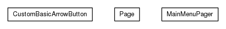

JavaScript is disabled on your browser.
Skip navigation links
Overview
Package
Class
Use
Tree
Deprecated
Index
Help
Prev Package
Next Package
Frames
No Frames
All Classes
Package org.universAAL.ui.gui.swing.bluesteelLAF.support.pager

The support package contains classes to help to build the bluesteelLAF.
See:
Description
Class Summary
Class
Description
CustomBasicArrowButton
MainMenuPager
A Jcomponent that will display components in
Page
s.
Page
A page that is managed in a
MainMenuPager
Package org.universAAL.ui.gui.swing.bluesteelLAF.support.pager Description
The support package contains classes to help to build the bluesteelLAF. The pager component is used to display the pages of buttons in the main menu.
Skip navigation links
Overview
Package
Class
Use
Tree
Deprecated
Index
Help
Prev Package
Next Package
Frames
No Frames
All Classes
Copyright © 2017
universAAL Consortium
. All rights reserved.